Обзор
Оглавление
В этом руководстве представлен обзор интерфейса CRYENGINE V с точки зрения пользователя Unity. Он охватывает основные различия между Unity и CRYENGINE V и обсуждается, как перенести существующие ресурсы в CRYENGINE V из Unity.
Основное внимание уделяется использованию поддержки C# в CRYENGINE V, поскольку она будет наиболее похожа и подходит для пользователей Unity, однако большая часть содержимого этого руководства также применима и к проектам C++.
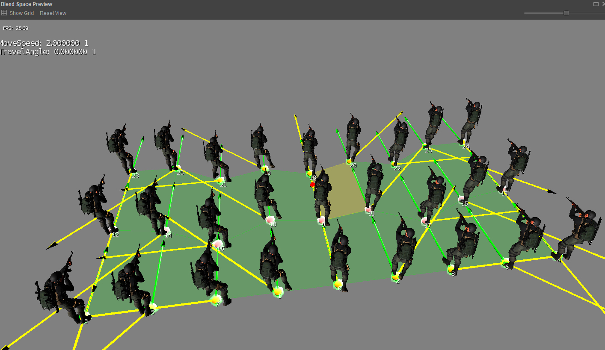
Портирование с Unity на CRYENGINE V
В Unity вкладка «Инспектор» используется для редактирования выбранных ресурсов в вашем проекте. В CRYENGINE V панель свойств отображает свойства выбранных объектов, а более крупные задачи редактирования выполняются в окне перспективы.
Создание проекта
CRYENGINE и Unity придерживаются схожих концепций при рассмотрении проекта. Однако есть некоторые тонкие различия, о которых вам следует знать.
В Unity вы можете запустить игру в редакторе, а затем создать сборку, если хотите запустить игру автономно. В CRYENGINE редактор (называемый Sandbox Editor) представляет собой скорее облегченную оболочку вашей игры. Это означает, что вы можете запускать игру в автономном режиме во время разработки.
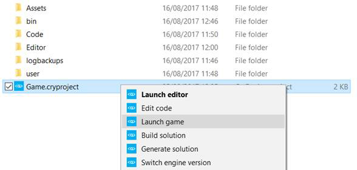
Сравнение редакторов
В CRYENGINE редакторе Sandbox (эквивалент редактора Unity) уже запущена версия вашей игры. - это запускается, как только вы загружаете свой уровень в CRYENGINE. Однако это довольно легко использовать аналогично представлениям сцены/игры в Unity. Используя Переключиться на игру-кнопка (выделена оранжевым цветом ниже), CRYENGINE отправляет обратные вызовы вашему коду для запуска/остановки игрового процесса. Это отключает дополнительные виджеты и камеру свободного перемещения, которые применяются в режиме редактирования. CRYENGINE также имеет дополнительную функцию, позволяющую просматривать/отлаживать физическую симуляцию (без запуска игровой логики) с помощью кнопок, выделенных фиолетовым цветом ниже.
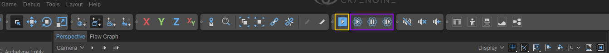
Редакторы бок о бок
Ниже приведены изображения редактора Unity (изображение слева) и редактора CRYENGINE Sandbox (изображение справа). Каждый из них имеет цветовую маркировку, чтобы показать, для чего используется каждый раздел. Как и в Unity, редактор Sandbox полностью настраивается путем перетаскивания вкладок в разные части окна редактора Sandbox.
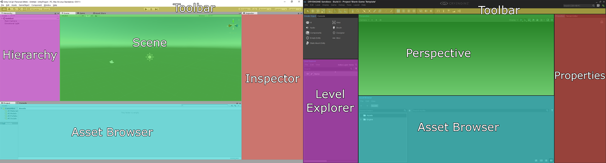
В Unity игровые объекты могут иметь несколько компонентов, которые отображаются в Инспекторе (правая панель редактора Unity). Аналогично, CRYENGINE имеет панель свойств, которая предоставляет те же функции: возможность добавлять и удалять компоненты из объектов, а также изменять их свойства.
Глоссарий
| Единство | CRYENGINE В. |
|---|---|
Редактор | Sandbox Редактор |
Компонент | Компонент |
GameObject | Сущность |
Сборный дом | Схематический объект |
Панель иерархии | Level Explorer |
инспектор | Панель свойств |
Обозреватель проектов | Обозреватель активов |
Сцена | Уровень |
Просмотр сцены | Перспектива |
Статическая сетка | Кисть |
Сетка со шкурой | Персонаж |
Материал | Материал |
Эффект частиц | Эффект частиц |
UI | Чешуйчатая форма |
Меканим | Mannequin |
Смешать дерево | Пространство смешивания |
Контроллер жесткого тела/персонажа | Физика сущностей |
Структура проекта
Как и проекты Unity, проекты CRYENGINE существуют в собственном каталоге. Кроме того, проекты CRYENGINE имеют файл проекта, который определяет определенные свойства проекта. Вы можете double щелкнуть этот файл, чтобы загрузить редактор Sandbox, или щелкнуть его правой кнопкой мыши, чтобы открыть дополнительные параметры. CRYENGINE очень либерален в отношении структурирования проекта, однако существуют общие соглашения, которым обычно следуют, как показано на изображении ниже..
По умолчанию код C# для шаблонов находится в папке «Код». Решение для этого кода можно создать, щелкнув правой кнопкой мыши файл Game.cryproject и выбрав Создать решение. Файл решения будет находиться в папке «Код», и его можно будет открыть с помощью Visual Studio 2017, если установлено расширение CRYENGINE.
В папке «Ресурсы» также можно хранить сценарии C#. Они появятся в браузере ресурсов редактора Sandbox и их можно будет открыть оттуда.
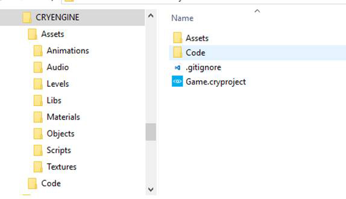
Импорт ваших сеток
CRYENGINE использует собственный формат файла Crytek Geometry Format (CGF) для чтения сеток. Существует два основных метода преобразования сеток в этот формат:
- Импортер FBX можно использовать для перетаскивания файлов FBX непосредственно из Unity в проект CRYENGINE.
- Если вы являетесь пользователем 3DS Max, предоставленный плагин можно использовать для экспорта CGF непосредственно из 3DS Max.
Вариант 1. Использование импортера FBX
Импортер FBX позволяет перетаскивать файлы FBX, DXF, DAE, OBJ и 3DS Max непосредственно в папку Asset вашего проекта и создавать пригодный для использования файл CGF. Дополнительную информацию об этой системе см. здесь.
Вариант 2. Использование плагина 3DS Max
Когда у вас есть сетка, готовая к экспорту из 3DS Max, создайте «манекен» на панели в правой части 3DS Max (как показано ниже). Поместите его туда, где вы хотите, чтобы была точка поворота вашей сетки, и назовите манекен, как вы хотите, чтобы ваша сетка была экспортирована.
Быстрый совет: Если у вас уже установлена точка поворота на сетке, нажмите Shift+A, затем щелкните сетку, чтобы быстро выровнять фиктивный объект.
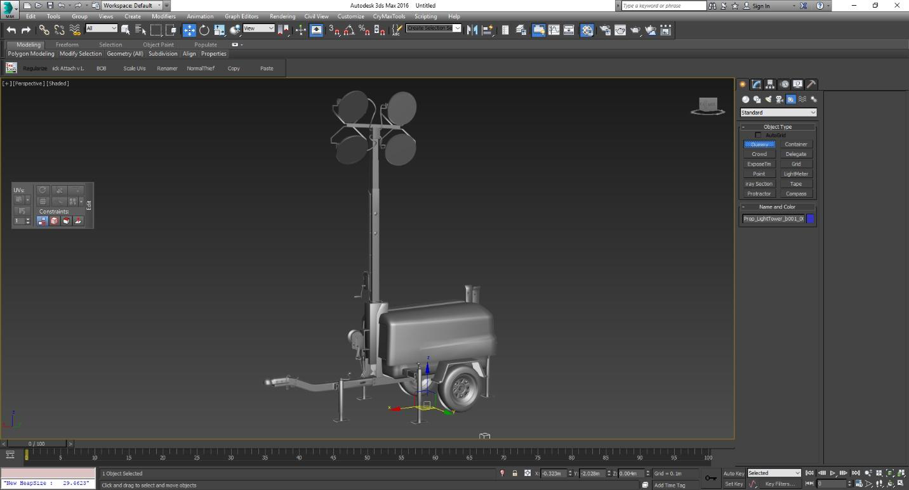
Затем откройте Schematyc View с помощью значка, показанного ниже, и свяжите сетку с фиктивным узлом с помощью инструмента Link — это сделает сетку дочерним элементом фиктивного узла.
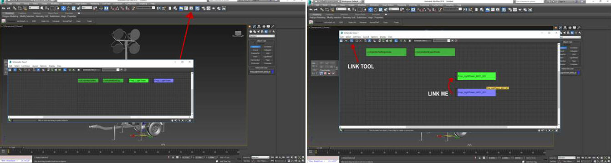
Что касается физики в CRYENGINE, то здесь можно создать прокси-сетку для столкновений. Это определяется формой и материалом, который применяется к создаваемому вами прокси. Дополнительную информацию об этой системе см. здесь.
В примере, использованном здесь, был создан простой прокси — он стал дочерним элементом сетка (не пустышка), назначил правильный материал ID и проверил ссылки в схематическом виде.
Ниже приведена окончательная настройка (красный прямоугольник — это прокси-сетка для коллизий).
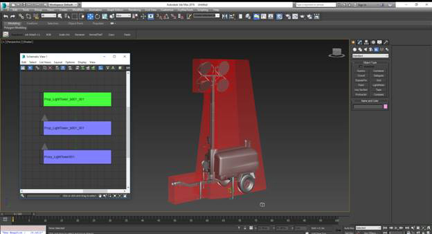
Теперь, когда у нас все настроено, мы можем использовать инструмент экспорта CRYENGINE для экспорта геометрии. В галочке Экспортер «Экспорт файла для каждого узла» чтобы создать отдельный файл CGF для каждого файла в списке экспорта. Если вы меняли нормаль сетки, то также отметьте галочкой «Пользовательские нормали» и если ты их не используешь не забудьте снять галочку «Цвета вершин».
Наконец, после экспорта перейдите туда, где находится ваш файл 3DS Max в файловой системе, и вы обнаружите, что файл CGF создан.
Преобразование текстур и материалов
CRYENGINE поставляется с инструментом компилятора ресурсов (RC), который используется для соответственно сжимать текстуры для их конкретного использования. Одним из распространенных вариантов использования этого компилятора является инструмент, интегрированный в Photoshop, который просто подготавливает ваши текстуры CRYENGINE.
Примечание: CRYENGINE использует рабочий процесс Spec/Gloss. Если вы используете рабочий процесс Metal/Spec, вам нужно будет преобразовать или воссоздать карту металличности. Хороший ресурс, посвященный лучшим практикам для этого, можно найти. здесь.
Для каждой карты CRYENGINE ищет разные окончания имени файла, чтобы определить тип карты.
| Имя файла | Окончание файла | Тип карты |
|---|---|---|
YourTextureName_diff | _diff | Диффузный |
YourTextureName_ddna | _ddna | Карта нормалей, глянец в альфе |
YourTextureName_spec | _spec | Зеркальный |
YourTextureName_displ | _displ | Смещение |
При сохранении текстур из Photoshop как CryTif с правильным расширением файла RC должен вызвать правильные настройки, как показано ниже. На этом экране у вас есть возможность установить разрешение и способ сжатия. Если вы не видите свою предустановку, нажмите кнопку "перечислить все пресеты" кнопку, чтобы они появились в списке.
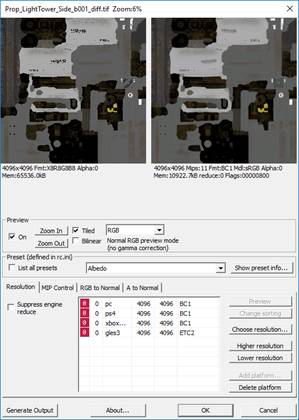
Экспорт Substance Painter
Substance Painter предоставляет вам возможность комбинировать текстуры перед экспортом — так проще запускать RC. Сохранение в формате файла PSD дает вам возможность эффективно загружать PSD и сохранять CryTifs.
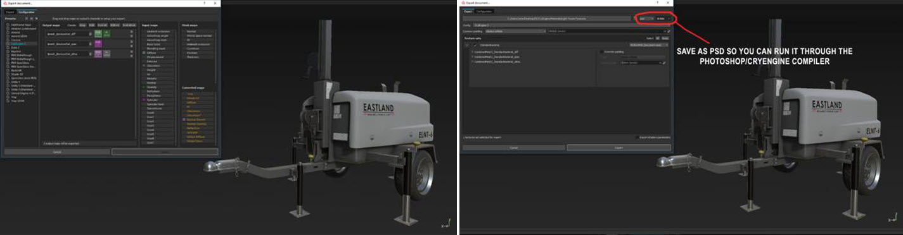
Создание материалов
Вы можете создавать материалы в 3DS Max или непосредственно в CRYENGINE. Быстрый способ создания материалов — просто скопировать существующий материал в проводнике Windows.
Материалы работают так же, как мультиматериалы в 3DS Max. Для каждого отдельного материала ID вам нужен соответствующий материал. После того, как вы взяли свои текстуры из Unity (и пропустили их через RC в Photoshop, чтобы создать CryTifs), вы можете объединить их для создания своих материалов.
Импорт анимированного персонажа
Экспорт из Maya
Прежде чем начать, ваша сетка со скинами должна быть скинирована с помощью двойных кватернионов (DQ), а не Classic Linear. CRYENGINE работает с DQ, поэтому даже если вы используете классический линейный скин, CRYENGINE при импорте будет воспринимать его как DQ (ваш скин не будет деформироваться так, как вы его видите в Maya).
Другие моменты, на которые следует обратить внимание.
- При привязке также обязательно установите максимальный предел влияния на 4.
- Корневой сустав должен быть ориентирован так, чтобы Y находился впереди персонажа, а Z — вверху.
- Ваше корневое соединение должно быть ориентировано (90,0,180) — вы можете добиться этого в Maya, используя настройку Joint Orient в редакторе атрибутов.
Начните с рига, убедитесь, что он имеет скин-сетку и скелет, и убедитесь, что все материалы назначены правильным сеткам. После этого вы можете создавать группы материалов в Material Editor в CryExporter. Выберите, какие объекты/конкретные материалы будут иметь одну и ту же группу материалов, и нажмите «Создать группу из выделенного». В этом примере мы используем три разные группы материалов, но при желании вы можете объединить их все в одну.
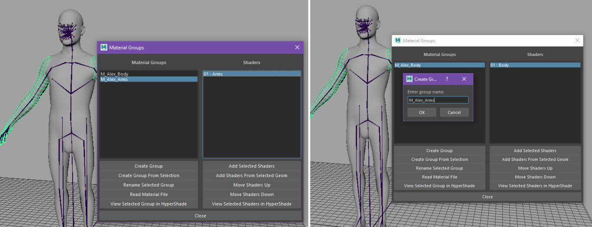
Создать полиплоскость
Как только это будет сделано, создайте полиплоскость и спрячьте ее внутри вашего персонажа. Потом удаляем историю, замораживаем трансформы и снимаем кожу с тазового сустава. Наконец, присвойте ему ламберт в отдельной группе материалов.
В этом примере мы создали ламберт под названием human_proxyplane и присвоили его группе материалов M_Human_Rig. Мы создаем эту полиплоскость и привязываем ее к скелету для передачи информации об иерархии скелета в/в CRYENGINE.
Далее откройте CryTools в Maya, выберите "прокси-самолет" и создайте CryExportNode. Выберите chr, назовите его как хотите/или как там персонаж называется, а затем нажмите «Создать».
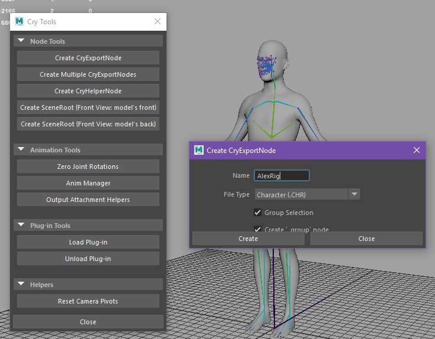
Крепление кожи
Теперь нам нужно сделать то же самое с кожей. Для каждого вложения скина выберите его и нажмите «Создать CryExportNode». Измените тип файла на скин и нажмите "создать". Примечание: Все эти вещи будут исключены из любой иерархии, в которой они у вас есть (это нормально). В CRYENGINE мы прикрепим файлы скинов к файлу chr и эффективно «оденем» нашего персонажа.
После того, как все CryExportNodes созданы для установки и каждого вложения скина, выберите материал проксиплана, созданный ранее. В редакторе атрибутов перейдите к «Дополнительные атрибуты» и установите для атрибута Physicalise значение ProxyNoDraw. Если этого атрибута нет, откройте Cry Exporter и нажмите кнопку «Добавить атрибуты» кнопку (она находится вверху).
Создайте SceneRoot (Вид спереди: модель спереди). Это создаст корневой узел сцены (и вам нужно будет удалить все, что находится под ним). Это пустой «групповой» узел в Maya, который ориентирован правильно и используется, чтобы сообщить CRYENGINE, в какую сторону идти вперед и вверх — почему? CRYENGINE и Maya используют разные ориентации мирового пространства.
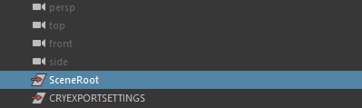
Физическая сетка
Следующее, что мы будем делать, это физическая сетка для столкновений. Создайте polyCube, сделайте его родительским для соединения, за которым он будет следовать, и обнулите значения перемещения и поворота - это заставит его защелкнуться на месте. Затем в режиме «Компонент» придайте кубу форму, соответствующую общей области, которую он должен покрывать. Вы можете добавить контуры ребер и вытянуть, чтобы получить то, что вы ищете. Примечание: Вы хотите попытаться сохранить полигон как можно ниже.
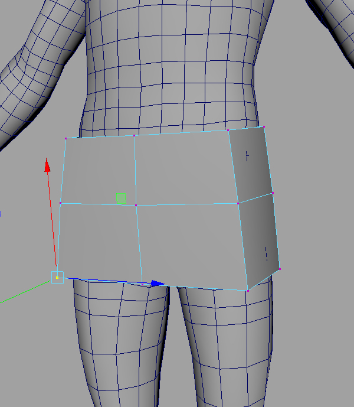
Назовите его так, как называется соединение, за которым оно следует, но добавьте в конец «_Phys». Например, куб, следующий за «Bip01__Pelvis», будет называться «Bip01__Pelvis_Phys». Назначьте ему новый Ламберт и добавьте его в группу материалов прокси-плоскости, которую вы создали ранее. Для этого выберите ламберт, откройте Material Editor, выберите группу материалов, в которую вы хотите его добавить, и нажмите «Добавить выбранные шейдеры».
Дублируйте все прокси-меши и измените «_Phys» на «_PhysParentFrame». Каждый из них должен быть родительским по отношению к суставу, расположенному над тем, за которым они должны следовать. Итак, посмотрите на соединение, за которым оно следует, а затем найдите следующее соединение над ним, которое также имеет прокси-сетку. Привяжите это к этому суставу. Так, например, сетка родительского кадра головы не будет связана с суставом шеи.
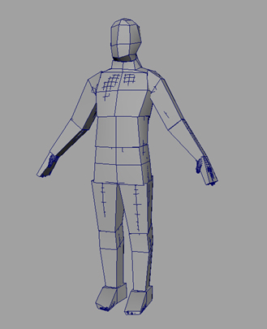
Откройте CryExporter, укажите путь экспорта туда, где вы хотите сохранить персонажа, в папке ресурсов вашего проекта. Выберите chr cryExportNode в Outliner, затем в разделе экспорта геометрии (в Crytek Export) установите собственный путь экспорта в нижней части CryExporter — скорее всего, это будет тот же пункт назначения, что и путь экспорта, который вы только что установили. Примечание: Пока вы это делаете, double проверьте и убедитесь, что для него установлено значение chr.
Выполните тот же процесс для каждого скина cryExportNode, выбрав оба, задав собственный путь экспорта, а затем проверив, установлены ли они в файлы скинов.
Экспортируйте файлы chr и скинов, выделив их все в Outliner и Exporter и нажав «Экспортировать выбранное». Если он жалуется, попробуйте экспортировать в другую папку, задав путь экспорта и пользовательские пути экспорта каждого узла во что-то другое. Вам также может потребоваться проверить, запустили ли вы Диспетчер настроек в папке инструментов Cry. Если вам нужно экспортировать их куда-то еще, просто скопируйте и вставьте файлы обратно в исходное место, куда вы пытались их поместить.
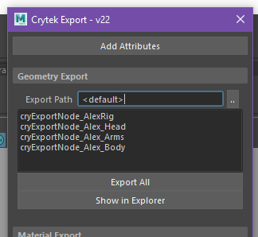
Импорт в CRYENGINE V
Теперь, когда мы закончили экспортировать все, мы готовы перейти к импорту в CRYENGINE.
Направляйтесь в Character Tool Инструменты -> Анимация -> Инструмент «Символ». Затем перейдите к Файл -> Новый персонаж и создайте в папке нового персонажа. Это создаст файл определения персонажа (CDF).
В только что созданном компакт-диске прикрепите chr к полю «скелет». Все это вы найдете на панели свойств справа. Суставы будут втянуты в сцену. Поместите прокси-материал, который вы сделали, в раздел материалов скелета. Если вы не можете найти, куда его поместить, возможно, вам придется сделать это непосредственно в XML, а затем перезагрузить CRYENGINE.
В разделе «Вложения» (и по одному) добавьте каждый вложенный скин. Установите тип вложения скина, установите геометрию для файла скина и материал для файла MTL, который применяется к этому вложению. Если хотите, вы можете изменить имя этого вложения, но CRYENGINE установит его по умолчанию.
Когда вы закончите добавлять все, вы можете обнаружить, что ваш персонаж размыт, просто загрузите уровень и вернитесь к Character Tool, и вы увидите свои текстуры правильно.
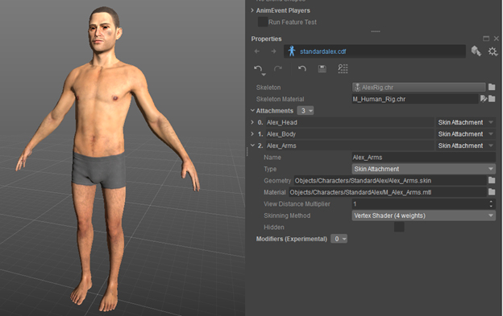
В Assets Outliner в CRYENGINE разверните раздел «Сжатие (анимации/)» и откройте список скелетов, щелкнув double. Ваш скелет должен быть в этом списке, чтобы любая анимация работала с вашим новым скелетом.
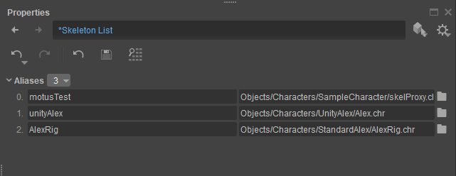
Добавьте новый псевдоним и справа добавьте свой chr. Левая часть должна автоматически заполниться именем CRYENGINE по умолчанию — не стесняйтесь изменить его. Сохраните список скелетов. Когда вы это сделаете, CRYENGINE сгенерирует для вас файл chrparams.
В Outliner в разделе «Скелеты» найдите файл chrparams и щелкните double, чтобы открыть его. Однако, прежде чем продолжить, убедитесь, что вы создали папку в разделе «Анимации», в которой вы будете хранить анимацию вашего персонажа. Вы можете просто просмотреть всю папку «Анимации», но для CRYENGINE гораздо лучше просматривать конкретную папку, а не какие-либо другие анимации персонажей или оружия. Установите chrparams для просмотра этой папки и нажмите кнопку «создать новые анимационные события» кнопку и назовите ее.
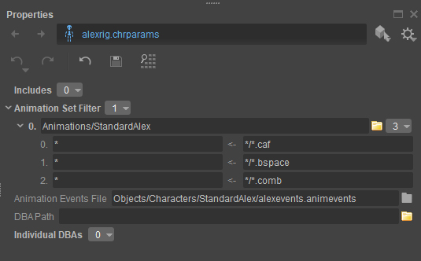
Файл chrparams также будет содержать такие вещи, как; Определения AimIK, определения выравнивания земли, информация LOD и т. д. NOTE: Чтобы внести изменения в файл chrparams, вам нужно будет использовать текстовый редактор по вашему выбору.
Импорт анимации
Теперь, когда у нас есть персонаж, загруженный в CRYENGINE, мы готовы начать импорт нашей анимации.
Откройте CryExporter в Maya и откройте Anim Manager. Нажмите «Создать», введите имя анимации и с помощью ползунка времени выберите начальный и конечный кадры.
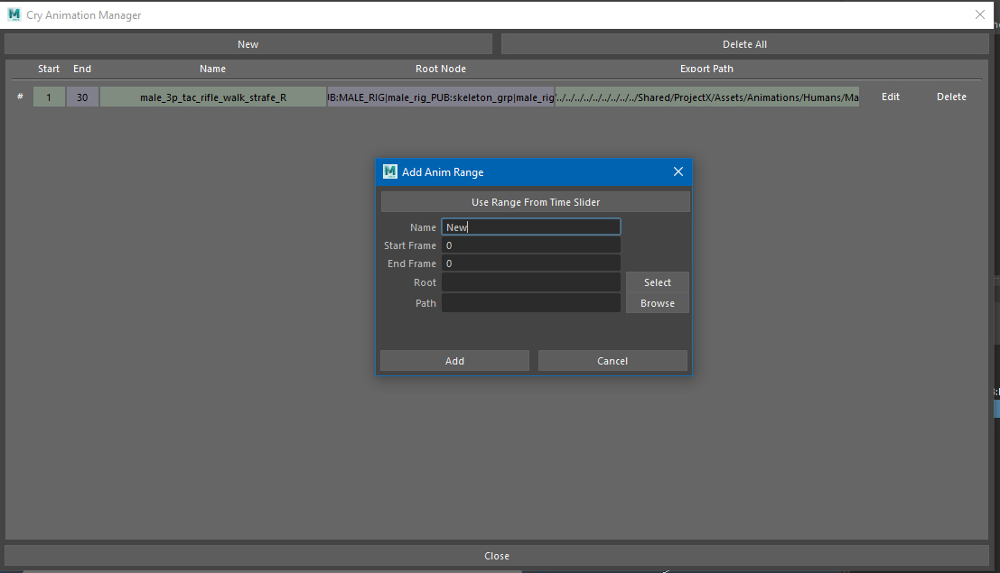
В Outliner Maya выберите корень анимации — обычно это корневое соединение вашей иерархии. Однако иногда вам может потребоваться экспортировать только соединение, находящееся в середине иерархии, например, чтобы экспортировать только верхнюю часть тела. Что ж, в этом случае вы будете экспортировать грудной сустав и, следовательно, не будет экспортировать анимацию от бедер и ниже (конечно, в зависимости от того, как настроена ваша иерархия).
Укажите папку, в которой будут храниться ваши анимации, и нажмите OK.
Примечание: В Менеджере анимаций вы не можете перечислить несколько анимаций, которые имеют один и тот же корневой сустав и один и тот же временной диапазон — если вы это сделаете, то будет отображена ошибка, сообщающая о наличии дубликата. Поэтому вам может потребоваться экспортировать эту анимацию, а затем вернуться в Anim Manager и экспортировать другую. Выберите анимации, которые вы хотите экспортировать, или, если вы экспортируете каждую анимацию из списка, вам не нужно ничего выбирать — просто нажмите «Экспорт выбранных анимаций». Наконец, закройте Anim Manager.
Как только ваши анимации будут экспортированы, вам нужно будет вернуться в Character Tool в CRYENGINE. Дважды щелкните своего персонажа (слева), и ваши анимации теперь будут перечислены в разделе «Анимации» в CRYENGINE Outliner. На маленьких значках рядом с каждой анимацией будет изображен человечек с пустой головой. Полая голова означает, что анимация еще не импортирована полностью. Итак, в разделе «Свойства» нажмите на анимацию и нажмите «Импорт». После завершения импорта голова маленького человечка будет заполнена.
CRYENGINE автоматически определит, к какой установке привязана анимация. Если это не так, просто измените раздел «Псевдоним скелета» на соответствующий риг, то есть тот, который вы сделали в списке скелетов несколькими шагами ранее.
Настройка пространств смешивания
Для получения дополнительной информации относительно Пространства смешивания увидеть здесь.
Создайте файл .bspace в папке Animations со следующим содержимым:
<ParaGroup>
<Размеры></Размеры>
<ExampleList></ExampleList>
<Смешиваемый></Смешиваемый>
</ParaGroup>
Откройте редактор Sandbox и откройте новое пространство смешивания из Outliner в Character Tool. Затем перейдите к Вид -> Предварительный просмотр Blendspace. Сначала добавьте размер, это будет переменная, которая будет вызывать изменение анимации, например MoveSpeed или TravelAngle. Думайте об этом как об осях на графике. Установите минимальное и максимальное значение для измерения и установите количество ячеек. Количество ячеек будет описывать плотность сетки Blendspace и, следовательно, плотность примеров virtual. Виртуальные примеры важны для предоставления точек, в которых веса смешивания предварительно рассчитываются, и поэтому позволяют сохранить некоторые вычисления во время выполнения. Примечание: Сетка не появится, пока вы не начнете размещать в ней анимацию.
Затем вам нужно начать переносить анимацию в Blendspace. Перейдите в раздел «Примеры» на вкладке «Свойства», добавьте пример, нажмите маленький значок папки и найдите анимацию, которую хотите добавить. Под каждой добавляемой анимацией вы найдете переменные, с которыми вы работаете, и скорость их воспроизведения. Иногда вам может понадобиться изменить скорость воспроизведения, чтобы исправить анимацию или добавить псевдопримеры. Примером того, когда необходимо использовать псевдопримеры, является случай, когда игрок работает быстрее, чем ожидалось — вы добавляете псевдопример, чтобы учесть это. Примечание: Вы можете добавлять одну и ту же анимацию в Blendspace столько раз, сколько захотите, а затем менять скорость воспроизведения.
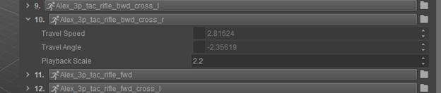
Иногда вам может потребоваться изменить переменные каждой анимации. Примечание: CRYENGINE пытается экстраполировать эти переменные из вашей анимации. Таким образом, в случае угла движения назад вам может потребоваться изменить значения, которые дает вам CRYENGINE. Это связано с тем, что при движении назад CRYENGINE считывает угол в радианах. Следовательно:
- Движение вперед равно 0, движение назад равно π.
- Направляясь влево, угол движения находится где-то между 0 и π.
- Направляясь вправо, угол перемещения находится где-то между 0 и -π.
Итак, чтобы создать хорошие переходы, вам нужно дважды импортировать анимацию движения назад и установить для одной угол перемещения π, а для другой — угол перемещения -π.
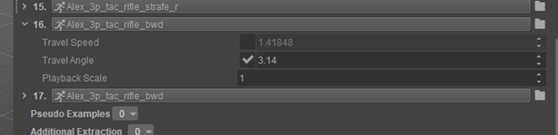
Существует также другой тип псевдопримера, в котором вы объединяете уже существующие анимации для создания одной новой. Вы можете сделать это в разделе псевдопримеров на панели свойств. Однако в зависимости от типа Blendspace, который вам нужен (1D, 2D или 3D), количество объединяемых анимаций будет разным. Примечание: Независимо от типа Blendspace вам нужно будет установить веса для смешивания — это будет зависеть от того, какую часть каждой анимации вы хотите смешать с другой(ими).
Итак, вы только что поместили анимации в Blendspace, теперь вам нужно фактически смешать их — это называется аннотациями. Перейдите в раздел «Аннотации» на панели «Свойства» и добавьте одну анимацию. Примечание: На этом этапе вам нужно решить, сколько анимаций вы будете смешивать. Итак:
Если это 1D Blendspace, то вы будете просто смешивать две анимации, и в этом случае размер аннотации по умолчанию подойдет. Теперь вы можете добавить две анимации, между которыми вы смешиваете — не имеет значения, в каком порядке вы их добавляете.
Если вам требуется 2D Blendspace, то, скорее всего, вы будете создавать квадраты. В этом случае установите размер аннотации равным 4 (так как необходимо 4 анимации). Тогда (вид на Blendspace сверху) перечислите каждую анимацию против часовой стрелки. Примечание: Не имеет значения, с какой анимации вы начнете как long, если вы будете перечислять их против часовой стрелки.
Используя 3D-пространства смешивания, вы можете создать одну из трех фигур с помощью своих переходов; пирамида на основе треугольника, пирамида на основе квадрата или треугольная призма — для них потребуется 4, 5 и 6 анимаций соответственно.
Если ваша фигура направлена вверх: Тогда (вид на Blendspace сверху) начните с основания фигуры и перечислите анимации против часовой стрелки.
Если ваша фигура направлена вниз: Тогда (вид на Blendspace снизу) начните с основания фигуры и перечислите анимации против часовой стрелки.
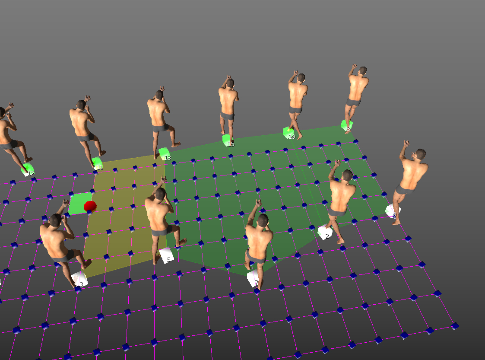
Если анимации были введены в правильном порядке, созданная вами смесь будет окрашена в зеленый цвет. Если они были заказаны неправильно, они будут окрашены в красный цвет. Смесь желтого цвета означает, что это именно та смесь, которую вы сейчас ищете — на ней также будет мигать красная точка.
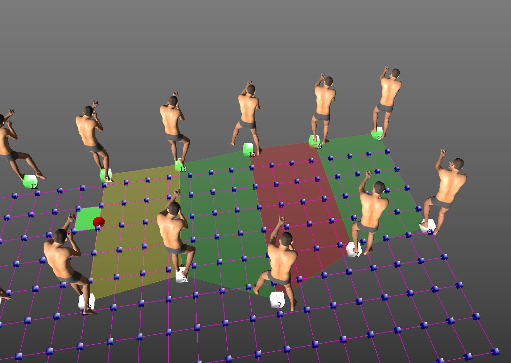
Для справки ниже приведен пример 1D-пространства смешивания (TurnAngle) и 3D-пространства смешивания (MoveSpeed, TravelAngle, TurnSpeed).
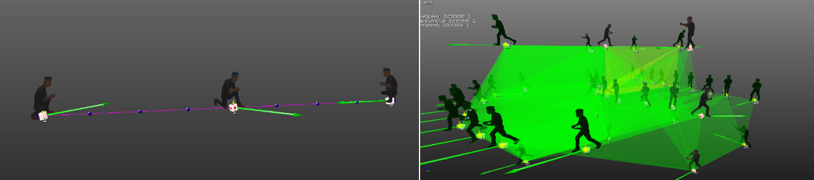
Перевод дерева Blend Unity
Как перейти от 2D-дерева смешивания в Unity к 2D-пространству смешивания в CRYENGINE? В приведенном ниже примере мы создали тот, который предназначен для бега назад, вперед и для обстрелов влево и вправо. В целом применяются те же принципы: в Unity мы создадим 2D-дерево смешивания произвольной формы, используя параметры MovementAngle и Скорость в контроллере аниматора вашего персонажа.
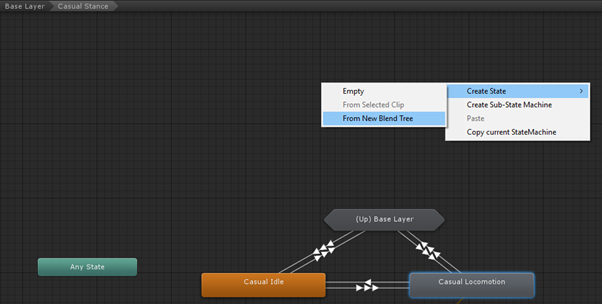
После создания заполните поля «Движение» соответствующими анимациями, например jog_fwd, jog_bwd и jog_fwd_L для направления движения вперед. Теперь, когда у вас есть все необходимые поля, мы можем начать отображать их на 2D-графике.
В самом центре (0,0 для скорости и 0,0 для TravelAngle) поместите холостой ход — это отправная точка для вашего дерева смешивания. Для этого убедитесь, что для PosX (ваш MovementAngle) и PosY (ваша скорость) установлено значение 0,0.
Теперь вы можете добавить jog_fwd, 0,0 к углу хода и 0,5 к PosY. Другими примерами могут быть 0,5 угла хода, это будет jog_strafe_r и спринт вперед 1 на PosY. Разместив несколько анимаций, вы сможете легко понять, где должны находиться остальные анимации, и это позволит вам создать необходимую вам систему передвижения. Следовательно, это должно выглядеть примерно так, как показано ниже.
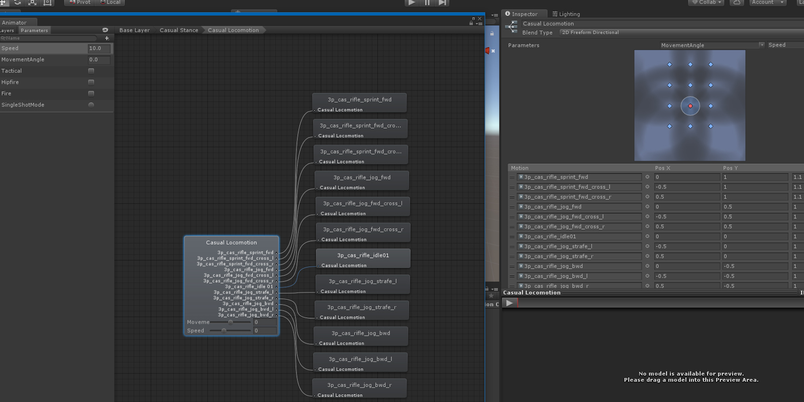
Итак, теперь мы создадим 2D-пространство смешивания в CRYENGINE, используя те же параметры, которые использовались в примере Unity. Однако сначала создайте файл .bspace в папке Animations со следующим содержимым:
<ParaGroup>
<Размеры></Размеры>
<ExampleList></ExampleList>
<Смешиваемый></Смешиваемый>
</ParaGroup>
Откройте редактор Sandbox, откройте новое Blendspace из Outliner в Character Tool и затем перейдите в Вид -> Предварительный просмотр Blendspace. Откроется новое окно, которое позволит вам наглядно представить параметры и то, как они повлияют на вашу анимацию.
Прежде всего мы хотим добавить два параметра, с которыми работаем, а именно «Скорость» и «MovementAngle». В CRYENGINE MovementAngle называется «Угол перемещения», поэтому выберите его из раскрывающегося списка параметров. В разделе «Параметры» находится еще одно раскрывающееся меню, позволяющее изменить количество ячеек в сетке. Измените количество ячеек на 10 для скорости и 20 для угла.
Далее мы установим минимальные и максимальные значения скорости движения и угла перемещения. Это 0 и +25 и -3,14 и +3,14 соответственно. Выбранные здесь скорости соответствуют конкретному типу анимации, которую мы используем в примере. Обратите внимание, что в случае спринта их следует увеличить, а в случае ползания — уменьшить.
Примечание: Мы выбрали для угла перемещения -3,14 и +3,14, почему? Мы сделали это потому, что «Движение вперед» всегда имеет значение 0,0. Обратите внимание, что значения от 0,0 до -3,14 — это движение вправо, а значения от 0,0 до +3,14 — это движение влево. Также обратите внимание, что значения +3,14 и -3,14 представляют собой идеальное движение назад, и, конечно, для покрытия полных 360 градусов нам нужно пространство смешивания в диапазоне от -3,14 до +3,14.
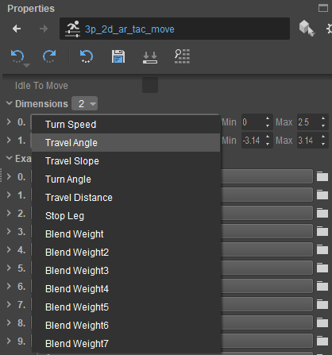
Теперь давайте добавим анимационные клипы в наше Blendspace. Unity называет их «Полями движения», а CRYENGINE — «Полями примеров». Добавьте свою анимацию в поля примеров под параметрами.
В то время как Unity потребует от вас добавить значения PosX и PosY (чтобы движок понимал движение анимационного клипа), CRYENGINE автоматически считывает корневое движение из анимационного клипа и отображает его в предварительном просмотре Blendspace. Чтобы получить к этому доступ, перейдите по адресу Редактировать -> Предварительный просмотр пространства смешивания.
Примечание: Если ваша анимация слишком медленная или слишком быстрая, вы можете настроить масштаб воспроизведения в раскрывающемся списке. Если вы не включили корневое движение и вместо этого хотите переместить символ в коде, вы можете просто добавить значение в скорость перемещения или угол перемещения, установив флажок и введя значение. Снятие флажка возвращает его к чтению корневого движения.
Примечание: CRYENGINE не хочет, чтобы холостой режим находился в этом пространстве смешивания (поскольку он будет мешать плавному переходу между направлениями), поэтому холостой ход находится в другом фрагменте и изменяется кодом.
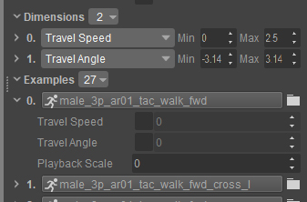
Ниже приведен пример того, что вы должны увидеть в предварительном просмотре Blendspace. Обратите внимание, что вверху у вас есть элементы управления отображением — здесь вы можете показать или скрыть сетку (если она запутается). Кроме того, ползунок в правом верхнем углу можно использовать для увеличения или уменьшения размера вашего персонажа.
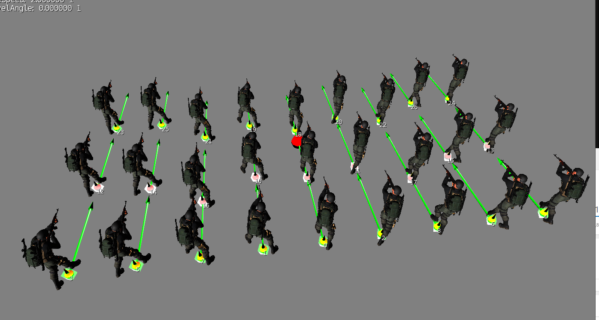
Теперь, когда у нас есть все наши примеры в Blendspace, давайте смешаем их. Для этого нам нужно создать аннотации смешивания. Это можно сделать с помощью XML или через интерфейс UI. Рядом с каждым введенным вами анимационным клипом появится номер примера — это ID анимации для этого Blendspace.
Поскольку это 2D-пространство смешивания, мы будем создавать квадратные аннотации. Если смотреть сверху вниз, вы хотите добавлять примеры против часовой стрелки. Если вы ввели правильно, появится зеленый квадрат, если неправильно, то появится красный квадрат. Если вы сейчас просматриваете именно эту смесь, появится оранжевый квадрат.
Примером аннотаций смешивания в XML может быть:
<Смешиваемый>
<Лицо p0="4" p1="13" p2="15" p3="6"/>
</Смешиваемый>
Продолжайте заполнять переходы, пока в предварительном просмотре Blendpsace не получите что-то похожее на то, что показано ниже.
Теперь вы можете предварительно просмотреть свое новое пространство смешивания, отрегулировав параметры пространства смешивания (в параметрах сцены) через небольшое раскрывающееся меню, расположенное под слоями анимации в Character Tool.
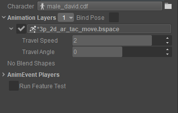
От Меканима до Mannequin
Mannequin — это набор инструментов высокого уровня, помогающих справиться со сложностями интерактивной анимации.
Mannequin — гораздо более мощная система, чем Mecanim, и она меняет способ совместной работы программистов и аниматоров. Mannequin дает аниматорам гораздо больше свободы в разработке и тестировании анимаций, наложений, переходов и даже сложных комбинаций того и другого. Кроме того, Mannequin не имеет встроенного конечного автомата аналогичного типа/вида, т. е. где программист обрабатывает состояние и передает его Mecanim через «теги» и «fragmentIds».
Мощь, которую предлагает Mannequin, делает ее одной из крупнейших систем, возможно, самой крупной отдельной системой для изучения в CRYENGINE. Однако, используя Mannequin, аниматоры могут тестировать гораздо больше своей собственной анимации внутри редактора Sandbox и вообще без необходимости запускать игру. Они могут вносить множество дополнений или улучшений в анимацию, причем без необходимости поддержки программирования, это справедливо даже для очень сложных игр. Однако для этого требуется хорошая предварительная связь между аниматором(ами) и программистом(ами), чтобы теги и фрагменты игры были определены соответствующим образом.
Чтобы настроить Mannequin, вам сначала нужно создать контекст для вашего персонажа в редакторе предварительного просмотра, а затем настроить теги и фрагменты для размещения ваших анимаций. Например, если у вас есть фрагмент бездействия, то внутри него у вас могут быть разные теги для разных типов бездействия, возможно, потому, что персонаж держит разное оружие или персонаж(и) имеют разное настроение.
Вам понадобятся следующие файлы в Assets/Animations/Mannequin/ADB.
- Thirdperson.adb — база данных анимации
- Файл thirdpersoncontrollerdefinition.xml — он определяет, какие теги, фрагменты и область действия будут принадлежать персонажу.
- playertags.xml – CRYENGINE будет редактироваться каждый раз, когда вы добавляете тег.
- playerfragmentids.xml — это будет редактироваться CRYENGINE всякий раз, когда вы добавляете идентификатор фрагмента.
В Assets/Animations/Mannequin/Preview вам понадобится.
- player.xml — это сообщит CRYENGINE, какие модели/прицелы и т. п. использовать при работе с персонажем игрока в редакторе Mannequin.
После того, как вы создали фрагменты для своей анимации, можно легко щелкнуть область правой кнопкой мыши, добавить слой(и) анимации, а затем добавить анимацию. При желании вы можете добавить много слоев — это позволяет использовать методы аддитивной анимации. Вы можете установить анимацию как «добавочную», открыв анимацию в Character Tool и проверив "добавка" поле на панели свойств. Вы также можете изменить смешивание анимации при входе и выходе из фрагмента, а также выполнять другие действия, такие как прикрепление реквизита или вставка прицельных поз (или другие функции, запрограммированные разработчиками) с помощью процедурный слои.
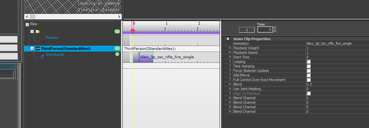
Разработка пользовательских интерфейсов
Можно создать базовый пользовательский интерфейс (UI) на C#, используя С# UI. Однако мы рекомендуем вам использовать реализацию Scaleform UI, поставляемую с CRYENGINE, для разработки игр UI. Дополнительную информацию о создании UI см. здесь.
Еще одно хорошее применение временной шкалы — состояния кнопок. Вы можете разместить каждое из своих состояний в отдельном кадре и переключаться между ними в коде.
Локализация
CRYENGINE может локализовать текст и звук для разных языков. Дополнительную информацию о локализации см. здесь.
Портирование компонентов, написанных на языке C#
Чтобы использовать сгенерированное решение C# от CRYENGINE, вам необходимо использовать Visual Studio 2017 года с расширением CRYENGINE.
Во-первых, создайте новый проект на основе шутера от третьего лица C# template — это можно сделать из программы запуска CRYENGINE. Затем, используя созданные файлы template, щелкните правой кнопкой мыши Game.cryproject файл и выберите Создать решение. Сгенерированное решение можно найти в папке «Код» вашего проекта.
Альтернативно к ресурсам можно добавить файлы C#. В результате они появятся в браузере ресурсов SandboxEditor, откуда их можно будет открыть в своем решении.
От GameObjects к сущностям
В Unity GameObjects можно разместить в мире и добавить к ним функциональность через компоненты (которые расширяют класс с именем MonoBehaviour). Аналогично, в CRYENGINE сущности помещаются в мир и к ним добавляются EntityComponents.
Ниже приведены два примера основных компонентов Unity и CRYENGINE.
public class ExampleComponent : MonoBehaviour
{
public float myFloat = 5.0f;
// Use this for initialization
void Start(){
}
// Update is called once per frame
void Update(){
}
void OnDestroy(){
}
}
public class ExampleComponent : EntityComponent
{
[EntityProperty]
private float MyFloat{get; set;} = 5.0f;
protected override void OnInitialize()
{
}
protected override void OnUpdate(float frameTime)
{
}
protected override void OnRemove()
{
}
}В Unity функции Start, Update и OnDestroy в MonoBehaviour являются; OnGameplayStart, OnUpdate и OnRemove в CRYENGINE. OnInitialize в CRYENGINE похож на Awake в Unity, но в некоторых случаях обрабатывается немного по-другому. Например, он вызывается в редакторе Sandbox, как только объект добавляется в мир, независимо от того, запущена ли в данный момент игра. Метод OnEditorGameModeChange(bool) можно переопределить для получения сообщений, когда пользователь входит в GameMode или снова покидает его.
Чтобы предоставить значения редактору Unity, вы должны создать поле и сделать его public или сериализовать, чтобы оно отображалось. В CRYENGINE вы можете предоставлять только свойства, у которых есть методы получения и установки в редакторе Sandbox. Для этого вы добавляете атрибут EntityProperty к свойствам, которые хотите предоставить. На данный момент в редакторе Sandbox можно предоставлять только примитивные типы, такие как bool, int, float и string. Однако вы можете изменить способ отображения строк, установив свойство Type EntityProperty, например, установив для него значение «Текстура», чтобы открыть браузер ресурсов для текстур в редакторе Sandbox.
Эти компоненты можно добавлять к объектам в редакторе Sandbox для объектов, размещенных в мире, или их можно добавлять динамически во время выполнения — это похоже на Unity.
Портирование Unity FixedUpdate
Unity предлагает функцию FixedUpdate, которая вызывается через равные промежутки времени (независимо от любых изменений частоты кадров). Однако в CRYENGINE нет прямого эквивалента. Однако любой код, который взаимодействует с физикой, можно переместить в функцию OnPrePhysicsUpdate(float frameTime) как long, поскольку frameTime используется для масштабирования любого движения, которое должно быть независимым от частоты кадров.
В примере игры в следующем разделе скорость движения умножается на frameTime в компоненте Player. Это делается для того, чтобы компенсировать любые различия в частоте кадров и обеспечить плавность и согласованность движения между машинами. Это то же самое, что умножать значения в Unity на Time.deltaTime.
Добавление компонента
Добавление компонента во время выполнения в Unity и CRYENGINE очень похоже, как показано в примерах ниже.
ExampleComponent component = gameObject.AddComponent<ExampleComponent>();ExampleComponent component = Entity.AddComponent<ExampleComponent>();Создание и уничтожение сущностей
В Unity для создания пустого GameObject во время выполнения вы можете использовать такую функцию.
GameObject SpawnObject(string name, Vector3 spawnPosition, Quaternion spawnRotation)
{
GameObject gameObject = new GameObject(name);
gameObject.transform.position = spawnPosition;
gameObject.transform.rotation = spawnRotation;
return gameObject;
}Entity SpawnEntity(string name, Vector3 position, Quaternion rotation)
{
return Entity.Spawn(name, position, rotation, Vector3.One);
}Последний параметр функции Entity.Spawn определяет масштаб сущности.
В Unity GameObjects есть компонент Transform, в CRYENGINE он встроен в саму сущность.
Уничтожение сущностей
Уничтожать объекты в CRYENGINE очень просто.
Destroy(gameObject); Entity.Remove();Физика (от твердого тела до PhysicsEntity)
В Unity Physics к GameObject добавляется поддержка с использованием компонента Rigidbody. Чтобы добавить компонент Rigidbody и установить для него массу 30 с помощью C#, мы просто сделаем следующее.
Rigidbody rb = gameObject.AddComponent<Rigidbody>();
rb.mass = 30;var physicParams = new RigidPhysicalizeParams();
physicParams.Mass = 30;
Entity.Physics.Physicalize(physicParams);Нет необходимости добавлять компонент Rigidbody, поскольку физика — это встроенная система, доступ к которой можно получить через поле «Физика» в сущности компонента. Вызов метода Physicalize с использованием этой конкретной структуры приведет к тому, что с Entity будет связано Rigidbody (т. е. связанный PhysicsEntity).
Другая структура, которую можно передать, как показано в примере игры в следующем разделе, — это LivingPhysicalizeParams, которая заставит физический объект вести себя как более мощная версия компонента CharacterController Unity.
Трассировка лучей/рейкаст
Простой рейкаст с камеры с расстояния 100 метров.
float distance = 100.0f;
RaycastHit hit;
if (Physics.Raycast(Camera.main.transform.position, Camera.main.transform.forward, out hit, distance))
{
return hit.collider.gameObject;
}float distance = 100.0f;
RaycastHit hit;
if (Physics.Raycast(Camera.Position, Camera.ForwardDirection, distance, out hit))
{
return hit.Entity;
}От префабов к Schematyc
В Unity мы можем легко превратить GameObject (который был настроен в сцене) в префаб, который затем сохраняется в файле, чтобы аналогичный объект можно было создавать любое количество раз. В CRYENGINE эта функция не привязана к редактору Sandbox (уровней). Вместо этого существует система под названием Schematyc, которая предоставляет возможность настройки префаба Entity в отдельном окне, а также имеет встроенный язык визуальных сценариев. Таким образом, дизайнеры могут добавлять простые функциональные возможности, не прибегая к услугам программиста.
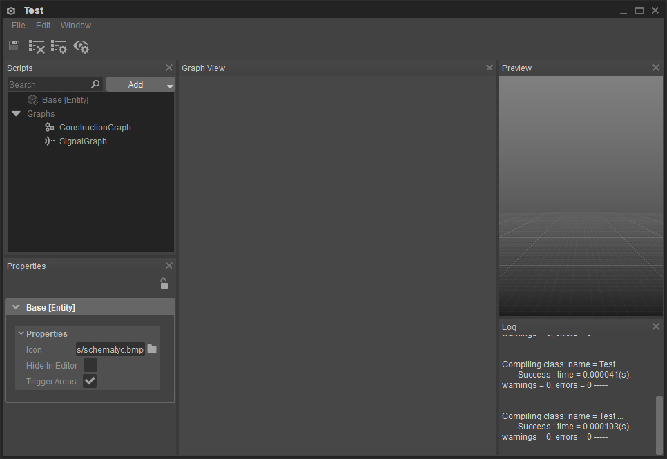
Редактор схем можно открыть из меню «Инструменты» в редакторе Sandbox. Мы будем использовать его в следующем примере шутера для реализации простого префаба. Подробнее о его дополнительных функциях можно прочитать здесь. здесь.
Часто задаваемые вопросы
Какие распространенные форматы файлов поддерживаются?
| Тип актива | Поддерживаемые форматы |
|---|---|
| 3D | .fbx, .obj |
| Текстура | .tif |
Как моя сцена хранится в CRYENGINE — чем она отличается от Unity?
В CRYENGINE концепция Unity Scene заменена на «уровень». Уровни похожи на сцены и состоят из ландшафта и иерархии объектов. Однако, в отличие от сцен, иерархия разделена на слои, которые на самом деле представляют собой отдельные файлы в системе. Эта система слоев позволяет одновременно работать над разными слоями разными людьми с помощью системы контроля версий.
Как создавать и использовать компоненты?
В CRYENGINE вы можете добавлять на уровень пустые сущности, а затем добавлять к нему дополнительные компоненты с помощью кнопки «Добавить компонент», расположенной на панели свойств. См. предыдущий раздел «От GameObjects к объектам».
А как насчет MonoBehaviours?
В Unity компоненты скрипта расширяют MonoBehaviour, который предоставляет методы, позволяющие определить, что делает компонент. В CRYENGINE у вас есть два варианта; вы можете создавать компоненты как на C#, так и на C++. В C# просто расширьте класс EntityComponent в CryEngine namespace. В C++ вы можете расширить IEntityComponent и зарегистрировать его в Schematyc, чтобы он отображался в редакторе Sandbox.
Как в коде добавить компонент в объект?
В Unity вы можете использовать функцию AddComponent<T>() для добавления компонента к игровому объекту. В CRYENGINE вы можете использовать AddComponent<T>() или GetOrCreateComponent<T>(), которые ведут себя аналогично.
Является ли мировая система координат в Unity такой же, как в CRYENGINE?
В Unity мировая система координат левая, т. е. где +ve X — вправо, +ve Y — вверх, а +ve Z — на экран. CRYENGINE также использует левостороннюю мировую систему координат, однако в случае CRYENGINE +ve X — вправо, +ve Y — на экран, а +ve Z — вверх.
Как мне создать исключения?
В C# исключения можно просто генерировать, как обычно в C#. Если возникнет исключение, игра приостановится и отобразится всплывающее окно с более подробной информацией об исключении. Для регистрации сообщений на выходе вы можете использовать класс Log.
В C++ CRYENGINE не позволяет обрабатывать исключения. Вместо этого используйте функцию Assert() для запуска утверждений при сборке в режиме отладки и используйте CryLog для регистрации выходных данных.
Как мне увидеть вывод журнала моей игры?
Во время игры консоль можно открыть, нажав клавишу ~ (на большинстве клавиатур вверху слева). Кроме того, журнал добавляется в файл game.log в корневом каталоге вашего проекта.